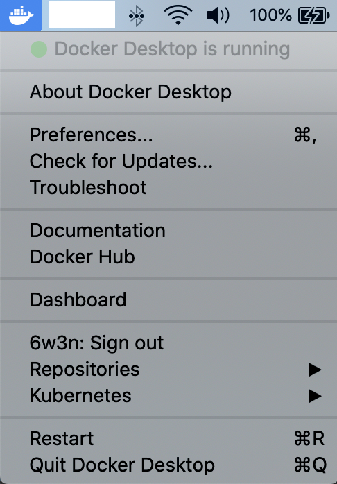
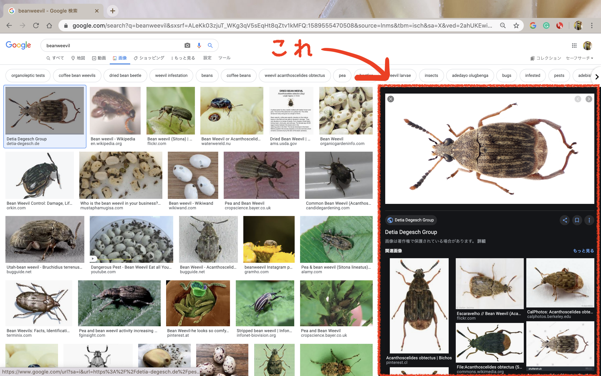
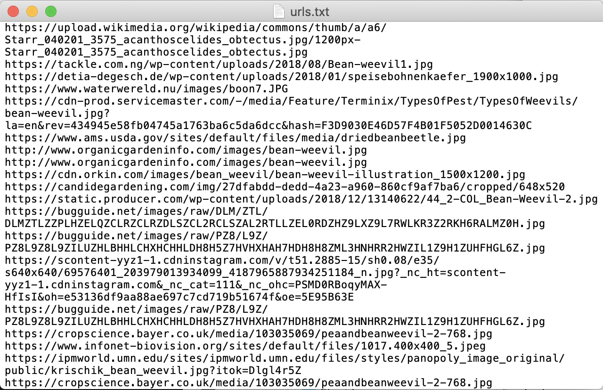
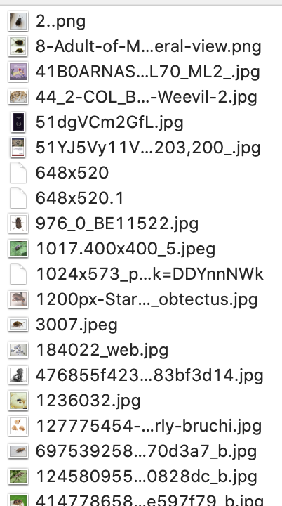

RSelenium Memo
May 1, 2020
17 mins read
Preface
このページは、RとSeleniumを使ったWeb Scraping（特に画像）の備忘録です。
今回はGoogleでキーワードを入力した際に表示される大量の画像の取得を目指します。

ここに表示されている画像たちです。
Environment
今回はMac OSでの動かし方になります。Linuxでも大筋は変わりません。（誰か試してみて欲しい。） Windowsで、DockerやTerminal相当のものを動かしたことがないので今回は説明できません。パスです。
上記環境ではDockerを用いていますが、Selenium自体はDockerでなくとも動きます。このページでは、簡単のためにDockerでの動かし方を書いています。
また、上記の環境はインストール済みであるという前提にします。
What’s RSelenium?
RSeleniumとはSeleniumをR上で動かすためのパッケージです。 Seleniumは、ウェブブラウザを操作するための便利ツールくらいに思って置いてもらって構いません。 Seleniumについて詳しく知りたい方はこちらを参照ください。
Main Flow
- Dockerの起動。
- Terminalを開いて、Dockerを走らせる。
- 画像を取得するURLを生成。
- RSeleniumで画像のURLを一括取得。
- wgetを用いて画像を取得。
1. Start Docker
Dockerを起動します。 アプリケーション > Dockerを叩いて起動させます。

2. Open Terminal and run Docker
Terminalを開いて、Dockerを走らせます。
docker run -d -p 4445:4444 selenium/standalone-firefox:2.53.1
standalone… は他のものでも大丈夫です。 Dockerのページに詳しく書かれています。
3. Generate URL to get images
あるキーワードで検索した際に表示される画像検索結果のページ(例えば、こういう感じ)のURLを生成するRのスクリプトを書きます。
pacman::p_load(tidyverse, RSelenium, httr, foreach)
google_search_path <- function(str) {
url <- list(
hostname = "google.com",
scheme = "https",
path = "search",
query = list(
q = str,
tbm = "isch"
)
)
class(url) <- "url"
httr::build_url(url)
}
このコードは研究室の先輩であるh8giさんに色々教えてもらいました。 {httr}パッケージを使いました。
google_search_path("beanweevil")
上のコードを実行するとbeanweevilと検索窓に打った時と同じページのURLを取得できます。
4. RSeleniumで画像のURLを一括取得。
ここからRのスクリプトが多くなります。
remDr <- remoteDriver(
remoteServerAddr = "localhost",
port = 4445L,
browserName = "firefox"
)
remDr$open()
remoteDriverはRSeleniumに入っている関数です。
remDr$open()を実行することでDockerで立てたサーバーにアクセスします。
str <- "beanweevil"
search_url <- google_search_path(str)
urls <- foreach(i=1:100, .combine=rbind) %do% { #Google shows 100 photos
remDr$navigate(search_url)
webElem <- remDr$findElements(using = 'xpath',
"//a[contains(@class, 'wXeWr')]") #initialize
remDr$mouseMoveToLocation(webElement = webElem[[i]]) #move location
remDr$click(1) #single click
tmp_webElem <- remDr$findElements(using = xpath',
"//a[contains(@class, 'wXeWr')]") #get web elements after click
tmp <- tmp_webElem[[i]]$getElementAttribute("href") #get tmp url
tmp_url <- httr::parse_url(tmp[[1]])$query$imgurl #parse and decode and get url
tibble(id=i, url=tmp_url)
}
先ほど定義したgoogle_search_path関数を使います。
remDr$navigate()で該当のURL(検索したい単語でのgoogle画像検索結果)にアクセスします。
remDr$findElements()で各画像に貼られているaタグを抜き出します。
ここから割と面倒です。。。 興味がなければ読み飛ばしてください。
Google画像検索で使われている画像の多くはData URI形式で埋め込まれています。 Data URIを直接ダウンロードしても画像にはなりません（！）。Decodeすれば画像に戻りますが、Data URIの時と元画像のURLの時とで条件分けをするのが面倒だったので、元画像のパスを探すことにします。（Decodeすると元画像のサイズではなくサムネの画像サイズになってたりもするのかもしれません。検証してませんが…。）
そのため、少し遠回りをして元画像のURLを取得します。 Google画像検索で出てきた画像をクリックすると、右側に黒い背景で拡大されます。この黒い背景の時に表示されている画像に関しては 元画像のURL を用いています。これを取得します。

そのためには「各画像に対してクリックを行う」という操作をしなければなりません。
それが9,10行目になります。
remDr$mouseMoveToLocation()でマウスの位置を画像の位置に持ってきて、remDr$click()でクリックを行います。
クリックを行った後、remDr$findElements()でaタグの位置を探します。
その後、ついにgetElementAttribute()でURLを取得します。
今回取得したURLはこういったページに飛ぶためのもので、URLそのものを見ると
{kind=link}
https://www.google.com/imgres?imgurl=https%3A%2F%2Fdetia-degesch.de%2Fwp-content%2Fuploads%2F2018%2F01%2Fspeisebohnenkaefer_1900x1000.jpg&imgrefurl=https%3A%2F%2Fdetia-degesch.de%2Fpest%2Fdried-bean-weevil%2F%3Flang%3Den&tbnid=TlH1dpAQiCOiFM&vet=12ahUKEwiUu8bKk7bpAhUrIqYKHXQVAgsQMygAegUIARDUAQ..i&docid=GqOZi-WcSv4tSM&w=1900&h=1000&q=beanweevil&ved=2ahUKEwiUu8bKk7bpAhUrIqYKHXQVAgsQMygAegUIARDUAQ
と一見どこに飛ぶのかわかりません。 実はこの文字列の中に画像のURLが隠れています。
それを取得するために、先ほども出てきた{httr}のparse_url()で画像のURLを探します。
返ってきた中身の$query$imgurlに欲しかった画像のURLが入ります。
ここまでの操作を画像1枚ずつ行っていくためにfor文を書いています。(foreachは個人の趣味です。)
100件全てを実行するのにはそこそこ時間がかかります。体感では10分くらい…です。
100件取った中身を見てみます。
# A tibble: 100 x 2
id url
<int> <chr>
1 1 https://upload.wikimedia.org/wikipedia/commons/thumb/a/a6/Starr_040201…
2 2 https://tackle.com.ng/wp-content/uploads/2018/08/Bean-weevil1.jpg
3 3 https://detia-degesch.de/wp-content/uploads/2018/01/speisebohnenkaefer…
4 4 https://www.waterwereld.nu/images/boon7.JPG
5 5 https://cdn-prod.servicemaster.com/-/media/Feature/Terminix/TypesOfPes…
6 6 https://www.ams.usda.gov/sites/default/files/media/driedbeanbeetle.jpg
7 7 http://www.organicgardeninfo.com/images/bean-weevil.jpg
8 8 http://www.organicgardeninfo.com/images/bean-weevil.jpg
9 9 https://cdn.orkin.com/images/bean_weevil/bean-weevil-illustration_1500…
10 10 https://candidegardening.com/img/27dfabdd-dedd-4a23-a960-860cf9af7ba6/…
# … with 90 more rows
これをテキストファイル(.txt)として出力します。
urls %>% select(url) %>%
write.table("YOURDIR/urls.txt",
col.names = FALSE, quote=FALSE, row.names=FALSE)

出力結果です。
5. wgetを用いて画像を取得。
ここまできたら後は簡単です。
wgetと出力したURLのテキストファイルを用いて画像を取得します。(curlでの代用も可です。)
もしwgetをまだダウンロードしていない、と言う方がいたらターミナル上で
brew install wget
を実行して入れておいてください。
筆者はものぐさすぎてRで一括で走らせたいと言う謎の気持ちが強かったので以下のコードを走らせています。
setwd("YOURDIR/figs")
system("wget -i ../urls.txt")
これで取得できます。こちらはそこまで時間がかかりません。

こんな感じで取得できます。
Postface
突貫工事的にRSeleniumを用いたGoogle画像検索結果から画像を取得をするコードとこのメモを書いたため、かなりの散文になってしまいました。ご容赦ください。
DockerやwgetなどR以外の技術も用いていますが、どちらもあまり頭を使わなくても動いてしまう優れものなので助かります。（筆者も特にDockerについては勉強不足です…。）
また、今回はfor文でURLを取得しましたが、もう少し綺麗な方法があると思います。（for文で回すのは正直頭が悪いと思っています…。） アドバイス等あればお知らせください。
Enjoy!
Sharing is caring!